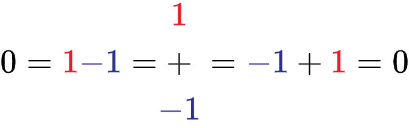
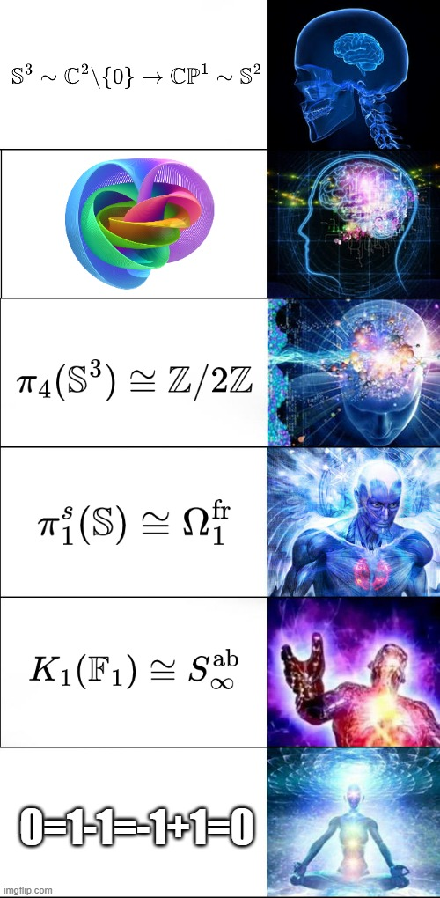
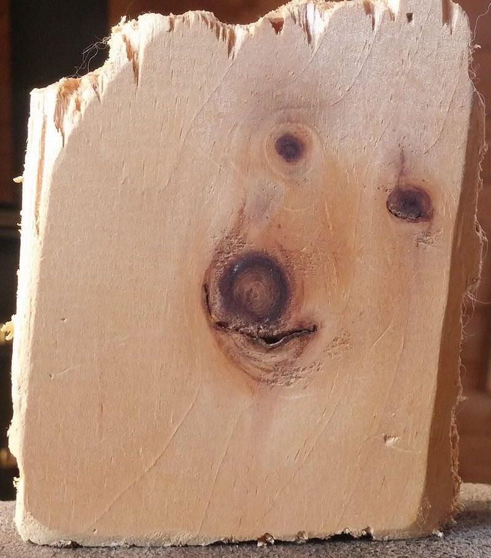

Gallery
Share some random things.
Videos
A great documentary in French about looking for Grothendieck, both physically and spiritually. It was published one year before he passed away.
Although there is a English subtitle which is only a little better than nothing, I am still working on a Chinese subtitle.
A video made with Blender. I try to show Hopf fibration in another way.


Dog/Chien/Hund/狗/犬

Ceci n'est pas un chien.
A monk asked, "Does a dog have a Buddha-nature or not?"
The master said, "Not [Mu]!"
The monk said, "Above to all the Buddhas, below to the crawling bugs, all have Buddha-nature. Why is it that the dog has not?"
The master said, "Because he has the nature of karmic delusions".
-Zhao Zhou's Dog